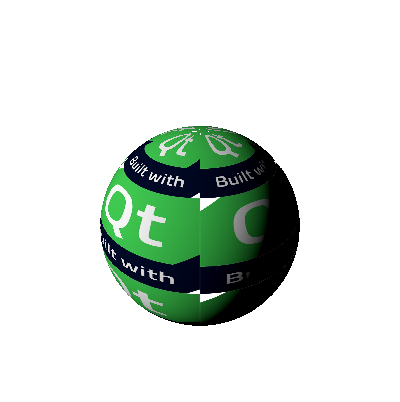

Texture QML Type
Defines a texture for use in 3D scenes. More...
| Import Statement: | import QtQuick3D |
| Inherits: | |
| Inherited By: |
Properties
- autoOrientation : bool
(since 6.2) - flipU : bool
- flipV : bool
- generateMipmaps : bool
- indexUV : int
- magFilter : enumeration
- mappingMode : enumeration
- minFilter : enumeration
- mipFilter : enumeration
- pivotU : float
- pivotV : float
- positionU : float
- positionV : float
- rotationUV : float
- scaleU : float
- scaleV : float
- source : url
- sourceItem : Item
- textureData : TextureData
- textureProvider : RenderExtension
(since 6.7) - tilingModeDepth : enumeration
- tilingModeHorizontal : enumeration
- tilingModeVertical : enumeration
Detailed Description
A texture is technically any array of pixels (1D, 2D or 3D) and its related settings, such as minification and magnification filters, scaling and UV transformations.
The Texture type in Qt Quick 3D represents a two-dimensional image. Its use is typically to map onto / wrap around three-dimensional geometry to emulate additional detail which cannot be efficiently modelled in 3D. It can also be used to emulate other lighting effects, such as reflections.
While Texture itself always represents a 2D texture, other kinds of textures are available as well via subclasses of Texture. For example, to create a cube map texture with 6 faces, use the CubeMapTexture type.
When the geometry is being rendered, each location on its surface will be transformed to a corresponding location in the texture by transforming and interpolating the UV coordinates (texture coordinate) that have been set for the mesh's vertexes. The fragment shader program that is being used to render the active material will then typically sample the material's texture(s) at the given coordinates and use the sampled data in its light calculations.
Note: A Material may use multiple textures to give the desired interaction with light in the 3D scene. It can represent the color of each texel on the geometry surface, but also other attributes of the surface. For instance, a "normal map" can represent the deviation from the geometry normals for each texel on the surface, emulating light interaction with finer details on the surface, such as cracks or bumps. See the principled material example for a demonstration of a material with multiple texture maps.
Texture objects can source image data from:
- an image or texture file by using the source property,
- a Qt Quick Item by using the sourceItem property,
- or by setting the textureData property to a TextureData item subclass for defining the custom texture contents.
The following example maps the image "madewithqt.png" onto the default sphere mesh, and scales the UV coordinates to tile the image on the sphere surface.
Model { source: "#Sphere" materials: [ PrincipledMaterial { baseColorMap: Texture { source: "madewithqt.png" scaleU: 4.0 scaleV: 4.0 } } ] }
The result looks as follows:
| Original image | Mapped onto a sphere |
|---|---|
 |
See also Qt Quick 3D - Procedural Texture Example.
Property Documentation
autoOrientation : bool |
This property determines if a texture transformation, such as flipping the V texture coordinate, is applied automatically for textures where this is typically relevant.
By default, this property is set to true.
Certain type of texture data, such as compressed textures loaded via the source property from a .ktx or .pkm file, or textures generated by rendering a Qt Quick scene via the sourceItem property, often have a different Y axis orientation when compared to textures loaded from image files, such as, .png or .jpg. Therefore, such a Texture would appear "upside down" compared to a Texture with its source set to a regular image file. To remedy this, any qualifying Texture gets an implicit UV transformation as if the flipV property was set to true. If this is not desired, set this property to false.
Note: This property is effective when the Texture is used in combination with a DefaultMaterial or PrincipledMaterial. Custom materials provide their own shader code, and so transformations such as the one configured by this property are ignored and are up to the application-provided shader code to implement.
This property was introduced in Qt 6.2.
See also flipV.
flipU : bool |
This property sets the use of the horizontally flipped texture coordinates.
The default is false.
Note: This property is effective when the Texture is used in combination with a DefaultMaterial or PrincipledMaterial. Custom materials provide their own shader code, and so transformations such as the one configured by this property are ignored and are up to the application-provided shader code to implement.
See also flipV.
flipV : bool |
This property sets the use of the vertically flipped texture coordinates.
The default is false.
Note: This property is effective when the Texture is used in combination with a DefaultMaterial or PrincipledMaterial. Custom materials provide their own shader code, and so transformations such as the one configured by this property are ignored and are up to the application-provided shader code to implement.
See also flipU.
generateMipmaps : bool |
This property determines if mipmaps are generated for textures that do not provide mipmap levels themselves. Using mipmaps along with mip filtering gives better visual quality when viewing textures at a distance compared rendering without them, but it may come at a performance cost (both when initializing the image and during rendering).
By default, this property is set to false.
Note: It is necessary to set a mipFilter mode for the generated mipmaps to be be used.
Note: This property is not applicable when the texture content is based on a Qt Quick item referenced by the sourceItem property. Mipmap generation for dynamic textures is not feasible due to the performance implications. Therefore, the value of this property is ignored for such textures.
See also mipFilter.
indexUV : int |
This property sets the UV coordinate index used by this texture. Since QtQuick3D supports 2 UV sets(0 or 1) for now, the value will be saturated to the range.
The default is 0.
magFilter : enumeration |
This property determines how the texture is sampled when it is "magnified", i.e. a texel covers more than one pixel in screen space.
The default value is Texture.Linear.
| Constant | Description |
|---|---|
Texture.Nearest | uses the value of the closest texel. |
Texture.Linear | takes the four closest texels and bilinearly interpolates them. |
Note: Using Texture.None here will default to Texture.Linear instead.
mappingMode : enumeration |
This property defines which method of mapping to use when sampling this texture.
| Constant | Description |
|---|---|
Texture.UV | The default value. Suitable for base color, diffuse, opacity, and most other texture maps. Performs standard UV mapping. The same portion of the image will always appear on the same vertex, unless the UV coordinates are transformed and animated. |
Texture.Environment | Used for specular reflection, this causes the image to be projected onto the material as though it was being reflected. Using this mode for other type of texture maps provides a mirror effect. |
Texture.LightProbe | The default for HDRI sphere maps used by light probes. This mode does not need to be manually set for Texture objects associated with the lightProbe property, because it is implied automatically. |
minFilter : enumeration |
This property determines how the texture is sampled when it is "minimized", i.e. a texel covers less than one pixel in screen space.
The default value is Texture.Linear.
| Constant | Description |
|---|---|
Texture.Nearest | uses the value of the closest texel. |
Texture.Linear | takes the four closest texels and bilinearly interpolates them. |
Note: Using Texture.None here will default to Texture.Linear instead.
mipFilter : enumeration |
This property determines how the texture mipmaps are sampled when a texel covers less than one pixel.
The default value is Texture.None.
| Constant | Description |
|---|---|
Texture.None | disables the usage of mipmap sampling. |
Texture.Nearest | uses mipmapping and samples the value of the closest texel. |
Texture.Linear | uses mipmapping and interpolates between multiple texel values. |
Note: This property will have no effect on Textures that do not have mipmaps.
pivotU : float |
This property sets the pivot U position which is used when applying a rotationUV.
The default is 0.0.
Note: This property is effective when the Texture is used in combination with a DefaultMaterial or PrincipledMaterial. Custom materials provide their own shader code, and so transformations such as the one configured by this property are ignored and are up to the application-provided shader code to implement.
See also rotationUV.
pivotV : float |
This property sets the pivot V position which is used when applying a rotationUV.
The default is 0.0.
Note: This property is effective when the Texture is used in combination with a DefaultMaterial or PrincipledMaterial. Custom materials provide their own shader code, and so transformations such as the one configured by this property are ignored and are up to the application-provided shader code to implement.
See also pivotU and rotationUV.
positionU : float |
This property offsets the U coordinate mapping from left to right.
The default is 0.0.
Note: This property is effective when the Texture is used in combination with a DefaultMaterial or PrincipledMaterial. Custom materials provide their own shader code, and so transformations such as the one configured by this property are ignored and are up to the application-provided shader code to implement.
See also positionV.
positionV : float |
This property offsets the V coordinate mapping from bottom to top.
The default is 0.0.
Note: Qt Quick 3D uses OpenGL-style vertex data, regardless of the graphics API used at run time. The UV position (0, 0) is therefore referring to the bottom-left corner of the image data.
Note: This property is effective when the Texture is used in combination with a DefaultMaterial or PrincipledMaterial. Custom materials provide their own shader code, and so transformations such as the one configured by this property are ignored and are up to the application-provided shader code to implement.
See also positionU.
rotationUV : float |
This property rotates the texture around the pivot point. This is defined using euler angles and for a positive value rotation is clockwise.
The default is 0.0.
Note: This property is effective when the Texture is used in combination with a DefaultMaterial or PrincipledMaterial. Custom materials provide their own shader code, and so transformations such as the one configured by this property are ignored and are up to the application-provided shader code to implement.
scaleU : float |
This property defines how to scale the U texture coordinate when mapping to a mesh's UV coordinates.
Scaling the U value when using horizontal tiling will define how many times the texture is repeated from left to right.
The default is 1.0.
Note: This property is effective when the Texture is used in combination with a DefaultMaterial or PrincipledMaterial. Custom materials provide their own shader code, and so transformations such as the one configured by this property are ignored and are up to the application-provided shader code to implement.
See also tilingModeHorizontal.
scaleV : float |
This property defines how to scale the V texture coordinate when mapping to a mesh's UV coordinates.
Scaling the V value when using vertical tiling will define how many times a texture is repeated from bottom to top.
The default is 1.0.
Note: This property is effective when the Texture is used in combination with a DefaultMaterial or PrincipledMaterial. Custom materials provide their own shader code, and so transformations such as the one configured by this property are ignored and are up to the application-provided shader code to implement.
See also tilingModeVertical.
source : url |
This property holds the location of an image or texture file containing the data used by the texture.
The property is a URL, with the same rules as other source properties, such as Image.source. With Texture, only the qrc and file schemes are supported. When no scheme is present and the value is a relative path, it is assumed to be relative to the component's (i.e. the .qml file's) location.
The source file can have any conventional image file format supported by Qt. In addition, Texture supports the same compressed texture file types as QtQuick::Image.
Note: Texture data read from image files such as .png or .jpg involves storing the rows of pixels within the texture in an order defined the Qt Quick 3D rendering engine. When the source file is a container for - possibly compressed - texture data, such transformations cannot happen on the pixel data level. Examples of this are .ktx or .pkm files. Instead, the Texture implicitly enables vertical flipping in the fragment shader code in order to get identical on-screen results. This is controlled by the autoOrientation property and can be disabled, if desired.
Note: Some texture compression tools may apply automatic vertical mirroring (flipping) on the image data. In modern tools this is often an opt-in setting. It is important to be aware of the settings used in the asset conditioning pipeline, because an unexpectedly flipped texture, and thus incorrect texturing of objects, can have its root cause in the asset itself, outside the application's and rendering engine's control. When the asset requires it, applications can always set the flipV property themselves.
See also sourceItem, textureData, autoOrientation, and flipV.
sourceItem : Item |
This property defines a Item to be used as the source of the texture. Using this property allows any 2D Qt Quick content to be used as a texture source by rendering that item as an offscreen layer.
If the item is a texture provider, no additional texture is used.
If this property is set, then the value of source will be ignored. A Texture should use one method to provide image data, and set only one of source, sourceItem, or textureData.
Note: Currently input events are forwarded to the Item used as a texture source only if the user is limited to interacting with one sourceItem instance at a time. In other words: you can share the same Item between multiple Textures, but then you cannot have multi-touch interaction with the same item on multiple textures at the same time. So it's best to use a separate 2D subscene instance for each Texture instance, if you expect to manipulate interactive items inside.
Note: Using this property in a Texture that is referenced from multiple windows is strongly discouraged. This includes usage via View3D::importScene. As the source texture created by this property is only accessible by one render thread, attempting to share it between multiple QQuickWindow instances is going to fail, unless the basic render loop of Qt Quick is used instead of the default threaded one. See Qt Quick Scene Graph on more information about the Qt Quick render loops.
Note: A Texture that contains the results of a Qt Quick offscreen render pass will in effect have an Y axis orientation that is different from what a Texture that receives its content via the source property uses. When used in combination with DefaultMaterial or PrincipledMaterial, this is all transparent to the application as the necessary UV transformations are applied automatically as long as the autoOrientation property is set to true, and so no further action is needed, regardless of how the texture was sourced. However, when developing custom materials this needs to be kept in mind by the shader code author when sampling the texture and working with UV coordinates.
See also source, textureData, and autoOrientation.
textureData : TextureData |
This property holds a reference to a TextureData component which defines the contents and properties of raw texture data.
If this property is used, then the value of source will be ignored. A Texture should use one method to provide image data, and set only one of source, sourceItem, or textureData.
See also source, sourceItem, and Qt Quick 3D - Procedural Texture Example.
textureProvider : RenderExtension |
This property holds the RenderExtension that will provide the QRhiTexture that will be used by this item.
Note: The texture created by RenderExtension needs to be made available by registering it with the engine.
This property was introduced in Qt 6.7.
See also RenderExtension and QSSGRenderExtensionHelpers.
tilingModeDepth : enumeration |
This property controls how the texture is mapped when the Z scaling value is greater than 1.
By default, this property is set to Texture.Repeat.
| Constant | Description |
|---|---|
Texture.ClampToEdge | Texture is not tiled, but the value on the edge is used instead. |
Texture.MirroredRepeat | Texture is repeated and mirrored over the Z axis. |
Texture.Repeat | Texture is repeated over the Z axis. |
tilingModeHorizontal : enumeration |
Controls how the texture is mapped when the U scaling value is greater than 1.
By default, this property is set to Texture.Repeat.
| Constant | Description |
|---|---|
Texture.ClampToEdge | Texture is not tiled, but the value on the edge is used instead. |
Texture.MirroredRepeat | Texture is repeated and mirrored over the X axis. |
Texture.Repeat | Texture is repeated over the X axis. |
See also scaleU.
tilingModeVertical : enumeration |
This property controls how the texture is mapped when the V scaling value is greater than 1.
By default, this property is set to Texture.Repeat.
| Constant | Description |
|---|---|
Texture.ClampToEdge | Texture is not tiled, but the value on the edge is used instead. |
Texture.MirroredRepeat | Texture is repeated and mirrored over the Y axis. |
Texture.Repeat | Texture is repeated over the Y axis. |
See also scaleV.